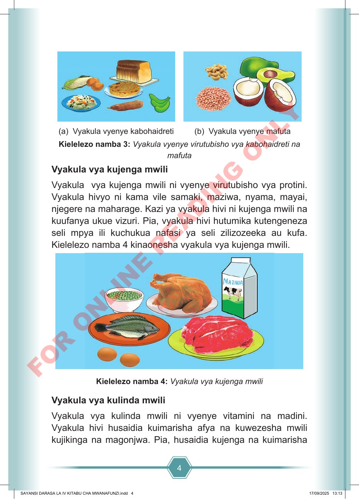

4 (a) Vyakula vyenye kabohaidreti (b) Vyakula vyenye mafuta Kielelezo namba 3: Vyakula vyenye virutubisho vya kabohaidreti na mafuta Vyakula vya kujenga mwili Vyakula vya kujenga mwili ni vyenye virutubisho vya protini. Vyakula hivyo ni kama vile samaki, maziwa, nyama, mayai, njegere na maharage. Kazi ya vyakula hivi ni kujenga mwili na kuufanya ukue vizuri. Pia, vyakula hivi hutumika kutengeneza seli mpya ili kuchukua nafasi ya seli zilizozeeka au kufa. Kielelezo namba 4 kinaonesha vyakula vya kujenga mwili. Kielelezo namba 4: Vyakula vya kujenga mwili Vyakula vya kulinda mwili Vyakula vya kulinda mwili ni vyenye vitamini na madini. Vyakula hivi husaidia kuimarisha afya na kuwezesha mwili kujikinga na magonjwa. Pia, husaidia kujenga na kuimarisha SAYANSI DARASA LA IV KITABU CHA MWANAFUNZI.indd 4 SAYANSI DARASA LA IV KITABU CHA MWANAFUNZI.indd 4 17/09/2025 13:13 17/09/2025 13:13 F O R O N L I N E R E A D I N G O N L Y